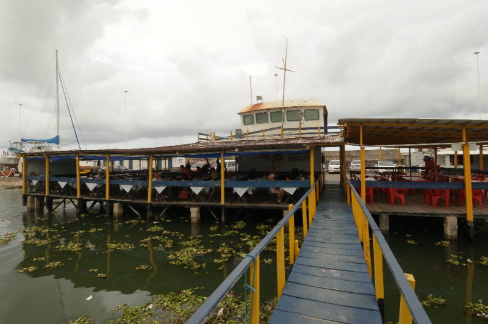

.jpg)
Marco Zero!

É um espaço público localizado no bairro do Recife da cidade homônima, capital de Pernambuco. O local fica próximo ao Porto do Recife e abriga o Marco Zero da cidade do Recife (instalado em 31 de janeiro de 1938, pelo Automóvel Clube de Pernambuco). É deste marco que são feitas todas as medidas oficiais de distâncias rodoviárias locais. Oficialmente denominada de Praça Barão do Rio Branco, fica localizada na Av. Alfredo Lisboa conectada às ruas Marquês de Olinda, Rio Branco e Barbosa Lima.
O Porto do Recife é administrado pelo governo do estado de Pernambuco. Está localizado na parte leste da cidade do Recife, às margens dos rios Capibaribe e Beberibe, que deságuam no oceano Atlântico. Primeiro porto de escravos das Américas, o então denominado "Porto de Pernambuco" foi o principal escoadouro de açúcar e pau-brasil da Capitania de Pernambuco, a mais rica capitania do Brasil Colônia. Utilizado desde 1535, foi também o berço do povoado do Recife. Tem atualmente sua base operacional centrada na movimentação de granéis sólidos, compreendendo grãos, clínquer (escória usada como tijolos para pavimentação), barrilha (produto químico usado na fabricação de vidro e sabão) e carga geral. Diferencia-se dos demais portos por situar-se num centro urbano e conseguir operar sem interferir na cidade. Movimenta uma média de 2,2 milhões de toneladas anuais. As principais cargas são açúcar, trigo, milho, malte de cevada, fertilizantes, clínquer e barrilha. As importações são efetuadas da Argentina, países da América do Norte e Europa. As exportações dirigem-se para países da África, América do Norte e Europa. O porto está próximo aos grandes centros consumidores e sua área de influência atinge quase todos estados do Nordeste. Possui um cais acostável de 2.960 metros de comprimento, com 16 berços de atracação, área de apoio para armazenagem coberta de 48.500 metros quadrados e descoberta de 80 mil metros quadrados.
Porto do Recife no século XVII.No início do século XX, o centro do Recife passou por drásticas reformas, com projetos de higienização urbana e melhoramento das condições do Porto do Recife. Na prática, a higienização social se traduziu em desapropriações de pelo menos 480 imóveis que foram demolidos para a abertura das três novas avenidas no Bairro. Foram, assim, desapropriados por utilidade pública.Construções dentro da faixa de 60m de largura para o futuro cais. Construções dentro da faixa de 24m de largura, em prolongamento da Ponte Buarque de Macedo até a linha do cais, para abertura de uma avenida (hoje a Av. Rio Branco), Construções dentro da faixa de 20m de largura para o alargamento da rua Marquês de Olinda, desde a Ponte Sete de Setembro até encontrar a nova avenida. Em um relato de Mário Sette podemos ter uma descrição do caso. Pouco a pouco desaparecia aos olhos não um bairro, mas um cenário de milhares de criaturas no seu presente e no seu passado. [...] e o Corpo Santo também se desmanchava [...] Poucos falariam ainda desse burgo onde Recife nascera, tão enviesado de ruas e ruelas [...] tudo no chão. Nunca se vira uma loucura assim. Com esta grande reforma, profundas modificações foram feitas no bairro e na praça, como a demolição da Matriz do Corpo Santo e a abertura de novas e largas avenidas.
O bairro do Recife é repleto de arte e cultura, basta caminhar por alguns minutos para observar casarões antigos, pinturas e esculturas ao longo da cidade. Uma das obras que mais chama a atenção de quem passa é a Torre de Cristal, localizada nos arrecifes do porto da capital, bem em frente ao Marco Zero. A escultura foi criada pelo artista plástico Francisco Brennand e se trata de uma árvore com cerca de 32 metros de altura, sendo composta por argila e bronze. Ela representa a Mata Atlântica e seu nome faz referência ao topo da obra: uma Flor de Cristal, descoberta por Roberto Burle Marx, um paisagista. Compondo o Parque das Esculturas Francisco Brennand, inaugurado em dezembro de 2000, um museu gratuito e a céu aberto, a Torre de Cristal é uma das 90 obras que fazem parte do projeto “Eu vi o mundo… Ele começava no Recife”, em comemoração pelos 500 anos do descobrimento do Brasil.
Além do Marco Zero, existe na praça um busto do Barão do Rio Branco, escultura do francês Félix Charpeutier, colocada ali em 1917, em bronze com uma altura de 2,5m e foi inaugurada, sob um pedestal em pedra de 4,20m, esculpido por Corbiniano Vilaça, em 19 de agosto do mesmo ano. Dando a obra uma altura de 7m.
José Maria da Silva Paranhos Júnior, o Barão do Rio Branco (Rio de Janeiro, 20 de abril de 1845 – Rio de Janeiro, 10 de fevereiro de 1912), foi um advogado, diplomata, geógrafo, professor, jornalista e historiador brasileiro. Bacharel em Direito pela Faculdade de Direito do Recife, ingressou nos estudos jurídicos ainda em 1862, na Faculdade de Direito de São Paulo, transferindo-se posteriormente para a instituição pernambucana. Filho de José Maria da Silva Paranhos, Visconde do Rio Branco, é o patrono da diplomacia brasileira e uma das figuras mais importantes da história do Brasil. Foi indicado ao Prêmio Nobel da Paz, em 1911.
A diplomacia:
Decreto do Presidente Rodrigues Alves, nomeando Rio Branco para o Ministério das Relações Exteriores, em 1902.
Cônsul-geral em Liverpool a partir de 1876, foi comissário do Brasil na Exposição Internacional de São Petersburgo em 1884,[4] superintendente em Paris dos serviços de imigração para o Brasil em 1889[4] e ministro plenipotenciário em Berlim em 1900,[5] assumindo o Ministério das Relações Exteriores de 3 de dezembro de 1902 até sua morte, em 1912. Ocupou o cargo ao longo do mandato de quatro presidentes da república — governos de Rodrigues Alves, Afonso Pena, Nilo Peçanha e Hermes da Fonseca — configurando-se uma unanimidade nacional em sua época.
Recebeu o título de barão do Rio Branco em 30 de maio de 1888. Inicialmente, receou em utilizar o título por medo de retaliações caso a monarquista fosse deposta, mas foi convencido por amigos a assinar como barão do Rio Branco. Após o advento da república, Paranhos Júnior seguiu assinando como Rio Branco, nome que remetia a seus valores monárquicos e a seu pai, Visconde do Rio Branco.
No dique encontra-se também a Casa de Banhos, que não existe mais, e o Farol do Recife. O dique tem uma extensão 4km de comprimento e começa no bairro de Brasília Teimosa. Indispensável no verão do Nordeste, o banho de mar era mais associado à saúde do que ao lazer até meados do século 20. Isso não impossibilitou que o Recife tivesse, ainda no século 19, empreendimentos voltados para essa finalidade, sendo o maior exemplo o Grande Estabelecimento Balneário de Pernambuco, popularmente conhecido como “Casa de Banhos” e localizado nos arrecifes próximos da antiga Ponte Giratória. Este estabelecimento tornou-se um ponto turístico bastante conhecido, sendo frequentado por visitantes estrangeiros e estando presente em um cartão postal vendido na antiga Livraria Contemporânea, localizada em Santo Antônio, ao lado do Mercado de São José e da Estação Central.
Casa dos banhos atual em Recife.
Antiga Rua dos Judeus, 1855. Parque de Esculturas Francisco Brennand Em 1709, os comerciantes locais receberam autorização da Coroa Portuguesa para instalar ali a Vila de Santo Antônio do Recife, o que só ocorreria dois anos mais tarde e depois de uma guerra civil com Olinda. No local do antigo ancoradouro, em 1918 foi inaugurado o Porto do Recife, o que deu um impulso ao desenvolvimento econômico do bairro. O London Bank e Associação de Comércio do Estado de Pernambuco foram instalados nessa época, quando o Recife Antigo passou por uma reformulação, destruindo alguns antigos sobrados para dar lugar a prédios mais modernos ao estilo das edificaçãos de Paris, capital da França, considerada um símbolo da modernidade. Entre as décadas de 1950 e 1970, o Recife Antigo viveu uma movimentada fase. No começo da década de 1980, quando deram início as operações do Porto de Suape, deixaram o Porto do Recife em plano secundário, e o bairro do Recife entrou em decadência. De grande centro comercial e importante ponto de embarque e desembarque de mercadorias para todo o nordeste brasileiro, o bairro do Recife passou a abrigar apenas escritórios contábeis ou de representação, e acima de tudo, os bordéis recifenses. Os seus moradores migraram para outras regiões do Recife, e com o tempo, o rico conjunto arquitetônico da área foi se deteriorando. Só na década de 1990 é que tiveram início os projetos de recuperação arquitetônica do casario do bairro do Recife. Em 2003, o bairro do Recife já contava com vários prédios históricos restaurados, e outros trechos do casario em recuperação e, pelo menos, três pólos de lazer consolidados. A população residente era insignificante, isso se comparada à de outras épocas, apenas 700 moradores, o que deu ao bairro o título de segundo bairro menos populoso da capital pernambucana. Mas, é para o Recife Antigo que não só a prefeitura, como também o governo do estado, estão pondo grandes programações turístico-culturais, como o Carnaval e as festividades do ciclo natalino recifense.

Rua do Bom Jesus: O bairro do Recife surgiu na primeira metade do século XVI. O ponto de origem da povoação foi um porto, construído para escoar pau-brasil e os produtos da atividade agro-açucareira de Olinda, então capital pernambucana. Instalado o porto, em seguida houve a necessidade de construir depósitos para armazenar as mercadorias, também foram erguidas as casas para servir como residências dos trabalhadores portuários e, assim, nasceu a comunidade. Inicialmente o bairro era denominado Arrecife dos Navios e se estendia, desordenadamente, por uma área de aproximadamente dez hectares, com a construção das casas não seguindo nenhum ordenamento: a abertura de ruas obedecia apenas à vontade dos que ali se fixavam.Só durante o domínio holandês, precisamente com a chegada do conde Maurício de Nassau a Pernambuco (1637), é que o bairro passou a ter algum planejamento. Nessa época, eram 15 ruas e uma praça. Por conta da movimentação do porto, o povoado logo se tornaria bastante habitado. Em 1654, por exemplo, quando os holandeses deixaram Pernambuco, o hoje bairro do Recife já contava com trezentos prédios - entre os quais a Casa da Câmara, a Igreja do Corpo Santo, a Cadeia e vários Armazéns.